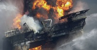
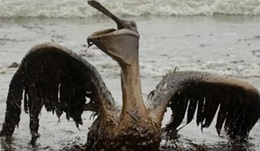
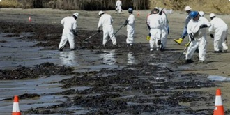

Principales Causas
Las principales causas de los vertidos de petróleo son los accidentes de buques petroleros, las fallas en plataformas de extracción marina y la rotura de oleoductos submarinos. También pueden producirse durante las operaciones de carga y descarga de combustible en puertos o debido a errores humanos y falta de mantenimiento en las instalaciones. En algunos casos, la negligencia y el incumplimiento de las normas de seguridad aumentan el riesgo de que ocurran estos derrames.

Consecuencias del vertido
Las consecuencias de los vertidos de petróleo son muy graves para el medio ambiente. El petróleo puede cubrir la superficie del agua y afectar a peces, aves, tortugas, delfines y otras especies marinas, causando intoxicaciones e incluso la muerte. Además, destruye hábitats naturales como arrecifes de coral y manglares, alterando el equilibrio de los ecosistemas. También genera pérdidas económicas en actividades como la pesca y el turismo, ya que las aguas y playas contaminadas dejan de ser aptas para su uso. Por otra parte, las sustancias tóxicas presentes en el petróleo pueden representar un riesgo para la salud humana.

Para prevenir y reducir los daños causados por los derrames de petróleo es necesario reforzar las medidas de seguridad en barcos, plataformas y oleoductos, además de realizar inspecciones y mantenimientos periódicos. Cuando ocurre un derrame, es importante actuar rápidamente utilizando barreras de contención y equipos especializados para recuperar el petróleo antes de que se extienda. También es fundamental aplicar leyes ambientales estrictas, sancionar a los responsables de la contaminación y promover el uso de energías renovables para disminuir la dependencia del petróleo y reducir el riesgo de futuros derrames.